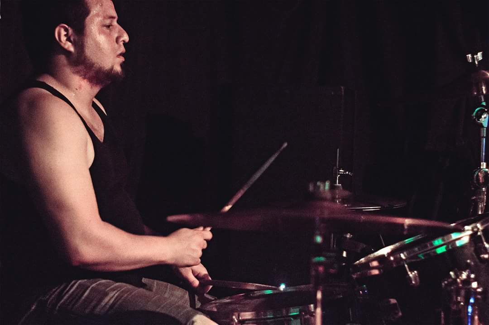

MEDELLÍN, COLOMBIA / PUNK ROCK
Punkies y Cerebro. PUNK ROCK.
SIN PEDIR
PERMISO.
Más de 22 años de música independiente.
Letras críticas. Ruido con algo que decir.
INDEPENDIENTES POR CONVICCIÓN01 — PYC

01 / MÚSICAEL RUIDO CONTINÚA
NUEVO ÁLBUM · PRÓXIMAMENTE
ESTE LADO
HACIA EL
ENEMIGO
FRONT TOWARD ENEMY
IDENTIDAD ORIGINAL DE LA BANDA
Un nuevo capítulo en nuestra historia.
Mientras llega, escucha a Punkies y Cerebro en sus canales oficiales.
02 / NUESTRA HISTORIARAÍCES LOCALES. VOZ PROPIA.
22+
AÑOS DE PUNK INDEPENDIENTE
DE MEDELLÍN.
CONTRA EL SILENCIO.
Punkies y Cerebro es un colectivo musical de Medellín con letras de contenido social y crítico. Una historia ligada a GP y a los escenarios de Colombia.
“Nuestra misión es atacar los círculos estrechos del poder”.JAIME LÓPEZ «JIMMY JAZZ»Leer la historia de la banda
03 / CONCIERTOS
NOS VEMOS
FRENTE AL ESCENARIO.
Próximas fechas por anunciar.
Sigue las novedades en InstagramSIGAMOS HACIENDO RUIDO
HABLEMOS.
Conciertos, prensa, colaboraciones y contratación.